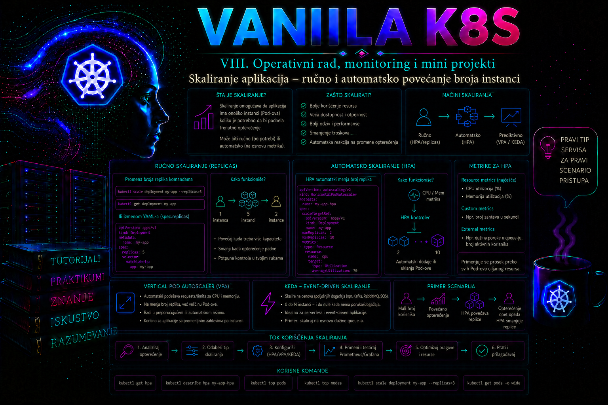

Vanilla Kubernetes

Skaliranje aplikacije u Kubernetes-u predstavlja kontrolisano prilagođavanje raspoloživog kapaciteta stvarnom ili očekivanom opterećenju. Najčešći oblik je horizontalno skaliranje, pri kojem se povećava ili smanjuje broj podova koji izvršavaju istu verziju aplikacije. Administrator može broj replika promeniti ručno ili može definisati HorizontalPodAutoscaler, skraćeno HPA, koji periodično procenjuje metrike i menja željeni broj replika unutar zadatih granica.
Skaliranje nije samo komanda kojom se broj podova menja sa dva na pet. Ono zavisi od arhitekture aplikacije, kapaciteta worker čvorova, ispravnih resource requests vrednosti, dostupnosti metrika, načina raspodele saobraćaja, vremena potrebnog za pokretanje poda, readiness provere i ponašanja zavisnih sistema. Nepravilno skalirana aplikacija može imati mnogo podova, a da i dalje ne pruža zadovoljavajuću uslugu zbog zagušene baze podataka, nedovoljnog broja konekcija, sporog spoljnog servisa ili zato što novi podovi nisu spremni da prime saobraćaj.
Šta se u Kubernetes-u zaista skalira
Deployment, StatefulSet i drugi kontroleri koji podržavaju Kubernetes scale podresurs imaju željeni broj replika u svom stanju. Kod Deployment objekta taj broj je predstavljen poljem spec.replicas. Deployment controller zatim upravlja ReplicaSet objektom, a ReplicaSet kreira ili uklanja podove kako bi stvarno stanje približio deklarisanom.
Kada administrator izvrši kubectl scale, komanda ne klonira ručno postojeći pod. Ona preko Kubernetes API servera menja željeni broj replika odgovarajućeg kontrolera. Kontrolna petlja zatim obavlja ostatak posla. Na isti način radi i HPA: on izračunava preporučeni broj replika i preko scale interfejsa ažurira ciljano opterećenje.
Horizontalno skaliranje treba razlikovati od vertikalnog skaliranja. Horizontalno skaliranje menja broj instanci, dok vertikalno skaliranje menja količinu CPU i memorijskih resursa dodeljenih jednoj instanci. Povećanje broja podova neće pomoći aplikaciji koja može da radi samo kao jedna aktivna instanca, niti procesu čiji se posao ne može podeliti. S druge strane, povećavanje resursa jednog poda ima granicu određenu kapacitetom čvora i često zahteva ponovno kreiranje poda.
Preduslovi za uspešno horizontalno skaliranje
Aplikacija je dobar kandidat za horizontalno skaliranje kada više njenih instanci može paralelno da obrađuje zahteve bez konflikta. Web i API servisi su tipični kandidati ukoliko ne čuvaju korisničku sesiju samo u lokalnoj memoriji ili lokalnom fajl sistemu. Stanje koje mora biti zajedničko instancama treba čuvati u odgovarajućem spoljašnjem sistemu, kao što su baza podataka, distribuirani keš ili objektno skladište.
- Jednake i zamenljive instance: svaki spreman pod treba da može da obradi bilo koji odgovarajući zahtev koji mu Service prosledi.
- Readiness provera: novi pod ne sme da dobija produkcioni saobraćaj pre nego što je aplikacija zaista spremna.
- Resource requests: scheduler i HPA moraju imati realne podatke o traženom CPU i memorijskom kapacitetu.
- Dovoljan kapacitet klastera: HPA može zatražiti nove replike, ali ne može sam obezbediti worker čvor ako node autoscaling nije implementiran.
- Raspodela saobraćaja: Service, Ingress ili drugi posrednik mora uključivati sve spremne podove u skup odredišta.
- Kapacitet zavisnosti: baza podataka, message broker, eksterni API i storage moraju podneti veći broj paralelnih konekcija i operacija.
Posebno treba proveriti ponašanje aplikacije pri smanjivanju broja replika. Uklanjanje poda koji obrađuje dugotrajan zahtev, poruku ili transakciju može prekinuti posao. Za takve aplikacije potrebni su pravilan terminationGracePeriodSeconds, obrada signala SIGTERM, prestanak prihvatanja novih zahteva i dovoljno vremena da se tekući poslovi završe.
Dostupnost je lanac, a ne samo broj replika
Više replika povećava potencijalni kapacitet i otpornost samo ako nisu izložene istom domenu kvara. Tri poda na istom worker čvoru ne štite aplikaciju od gubitka tog čvora; tri poda u istoj zoni ne štite je od prekida zone; tri spremna frontend poda ne obezbeđuju uslugu ako svi zavise od jedne nedostupne baze. Zbog toga se broj replika, njihov raspored, budžet prekida, kapacitet zavisnosti i ponašanje pri gašenju projektuju kao jedna celina.
| Mehanizam | Šta kontroliše | Šta ne garantuje | Tipičan dokaz |
|---|---|---|---|
| Deployment ili StatefulSet replike | Željeni broj podova | Da su podovi spremni, ravnomerno raspoređeni ili da zavisnosti imaju kapacitet | Status kontrolera, spremni podovi i EndpointSlice |
| HPA | Željeni broj replika prema metrikama | Čvorni kapacitet, poslovni SLO ili uklanjanje uskog grla | HPA conditions, događaji, metrika i broj spremnih replika |
| Topology spread | Raspored novih podova između topoloških domena | Evakuaciju postojećih podova posle promene pravila niti opstanak čvora | Mapiranje pod–čvor–zona i scheduler događaji |
| PodDisruptionBudget | Broj istovremenih dobrovoljnih evikcija koje koriste Eviction API | Zaštitu od pada čvora, direktnog brisanja poda ili pogrešnog rollout-a | disruptionsAllowed, kontrolisani drain ili eviction test |
| Node autoscaling | Dodavanje i uklanjanje čvornog kapaciteta | Da aplikacija može bezbedno da se umnoži ili da će novi čvor stići pre isteka SLO-a | Pending razlog, odluka autoskalera i spremnost novog čvora |
Ručno skaliranje
Ručno skaliranje je opravdano kada administrator poznaje vreme i očekivani intenzitet opterećenja, kada automatske metrike nisu dostupne ili kada je tokom incidenta potrebno brzo i kontrolisano povećati kapacitet. Primeri uključuju planirani poslovni događaj, početak obračunskog perioda, promotivnu kampanju ili privremeno povećanje kapaciteta pre održavanja dela infrastrukture.
Osnovna komanda ima sledeći oblik:
kubectl scale deployment/web-api \
--namespace=skaliranje-lab \
--replicas=5Komanda menja željeni broj replika, ali njen uspešan završetak ne potvrđuje da je pet podova postalo spremno. Administrator mora odvojeno proveriti Deployment, podove, događaje i raspoloživi kapacitet čvorova.
kubectl rollout status deployment/web-api \
--namespace=skaliranje-lab \
--timeout=180s
kubectl get deployment,pods \
--namespace=skaliranje-lab
--selector=app=web-api
--output=wide
Za promenu u okruženju u kojem više administratora ili automatizacionih sistema može istovremeno menjati isti objekat korisne su preconditions opcije. Parametar --current-replicas sprečava skaliranje ako trenutni broj replika nije očekivan:
kubectl scale deployment/web-api \
--namespace=skaliranje-lab \
--current-replicas=2 \
--replicas=5Ako je u međuvremenu drugi proces promenio broj replika, komanda neće neprimetno pregaziti novo stanje. To ne zamenjuje proces upravljanja promenama, ali smanjuje rizik od konkurentnih izmena.
Ručno skaliranje je jednostavno, ali nema povratnu spregu. Pet replika ostaje pet bez obzira na to da li su preopterećene ili gotovo neaktivne. Administrator mora pratiti metrike i sam odlučiti kada da izvrši novu promenu. Kada opterećenje brzo osciluje ili traje van radnog vremena, ručni postupak postaje spor, skup i sklon greškama.
Horizontal Pod Autoscaler
HorizontalPodAutoscaler je Kubernetes API objekat i kontroler koji periodično poredi posmatrane metrike sa zadatim ciljem. HPA ne obrađuje saobraćaj i ne kreira podove direktno. On menja željeni broj replika ciljnog Deployment ili drugog skalabilnog resursa, a njegov kontroler zatim usklađuje broj podova.
Za metriku prosečne iskorišćenosti CPU-a pojednostavljena logika može se predstaviti odnosom:
željene_replike =
ceil(trenutne_replike × trenutna_metrika / ciljna_metrika)Ako dve replike prosečno koriste 80% svojih CPU requests vrednosti, a cilj je 50%, rezultat je približno četiri replike. Kontroler primenjuje toleranciju i dodatna pravila kako male promene metrike ne bi izazivale stalno skaliranje.
U stabilnom autoscaling/v2 API-ju HPA može koristiti resource metrike, pod metrike, object metrike i external metrike, u zavisnosti od instaliranih metrics adaptera. Osnovni Metrics Server obezbeđuje kratkoročne CPU i memorijske metrike preko Resource Metrics API-ja. On nije dugoročna monitoring baza, sistem za alerting niti zamena za Prometheus ili drugi observability sistem.
CPU utilization cilj predstavlja procenat u odnosu na CPU request, a ne procenat fizičkog procesora čvora niti CPU limit. Ako kontejner troši 100m, a njegov request je 200m, iskorišćenost za HPA iznosi približno 50%. Zbog toga loše postavljen request neposredno menja ponašanje autoskalera. Previsok request prikazuje nisku iskorišćenost i može sprečiti pravovremeno skaliranje. Prenizak request može izazvati rano i prečesto povećavanje broja replika.
Izvor metrika i zavisnosti HPA kontrolne petlje
U tipičnom vanilla Kubernetes klasteru Metrics Server prikuplja resource metrike od kubelet servisa na čvorovima i izlaže ih kroz agregirani Kubernetes API. Dostupnost se proverava komandom kubectl top i pregledom APIService objekta.
kubectl top nodes
kubectl top pods --all-namespaces
kubectl get apiservice v1beta1.metrics.k8s.io
APIService treba da ima stanje Available=True. Ako komanda kubectl top prijavi da Metrics API nije dostupan, HPA zasnovan na CPU ili memoriji neće imati potrebne podatke. Administrator tada proverava Metrics Server podove, servis, APIService, događaje i logove:
kubectl get deployment,pods,service \
--namespace=kube-system \
--selector=k8s-app=metrics-server
kubectl describe apiservice v1beta1.metrics.k8s.io
kubectl logs \
--namespace=kube-system
deployment/metrics-server
--tail=200Česti uzroci su nedostupnost kubelet porta, DNS ili mrežni problem, neispravno poverenje u kubelet sertifikate, pogrešno izabrana adresa čvora ili problem agregacionog sloja API servera. Isključivanje TLS provere prema kubelet servisima opcijom za nesiguran TLS nije odgovarajuće produkciono rešenje. Ispravna reakcija je uspostavljanje validnog lanca poverenja i potrebne mrežne komunikacije.
Granice, stabilizacija i ponašanje skaliranja
HPA mora imati definisane granice minReplicas i maxReplicas. Minimum predstavlja najmanji dozvoljeni kapacitet, ali i nivo raspoloživosti koji aplikacija treba da zadrži pri slabom opterećenju. Maksimum štiti klaster i zavisne sisteme od nekontrolisanog rasta, ali ne treba da bude proizvoljan. On mora biti usklađen sa kapacitetom namespace kvota, worker čvorova, baze podataka i licencnih ili poslovnih ograničenja.
Povećavanje i smanjivanje nisu simetrične operacije. Brzo povećavanje kapaciteta često je poželjno jer smanjuje trajanje preopterećenja. Prebrzo smanjivanje može ukloniti kapacitet posle kratkog pada saobraćaja i izazvati novo povećavanje čim se opterećenje vrati. Polje behavior u autoscaling/v2 omogućava definisanje stabilizacionih prozora i ograničenja brzine.
behavior:
scaleUp:
stabilizationWindowSeconds: 0
policies:
- type: Percent
value: 100
periodSeconds: 60
- type: Pods
value: 4
periodSeconds: 60
selectPolicy: Max
scaleDown:
stabilizationWindowSeconds: 300
policies:
- type: Percent
value: 25
periodSeconds: 60Prikazana politika dozvoljava relativno brzo povećavanje, dok pri smanjivanju koristi petominutni stabilizacioni prozor i ograničava uklanjanje na 25% replika tokom jednog perioda. Vrednosti se ne preuzimaju mehanički između aplikacija. Administrator ih određuje na osnovu vremena pokretanja poda, profila saobraćaja, SLO zahteva i rezultata testova opterećenja.
Kada je definisano više metrika, HPA izračunava preporuku za svaku i bira najveći preporučeni broj replika. Ako jedna metrika ne može da se pribavi, a preostale predlažu smanjivanje, smanjivanje se preskače; povećavanje i dalje može biti izvršeno kada važeća metrika to zahteva. Ovakvo konzervativno ponašanje štiti dostupnost, ali kvar metrics adaptera može dugo zadržati višak kapaciteta i zato mora imati alarm i operativnog vlasnika.
Podovi koji se brišu i podovi u stanju Failed ne ulaze u proračun. Nedostajuće metrike i još nespremni podovi tretiraju se konzervativno, čime se ublažava odluka skaliranja. Kratak CPU skok pri pokretanju može dati pogrešan signal; startupProbe i readiness proba treba da odraze stvarnu fazu zagrevanja aplikacije. Kontroler ima klasterske parametre za početni readiness period i CPU inicijalizaciju, ali njih menja vlasnik control plane-a tek nakon merenja uticaja na sve HPA objekte.
Raspodela replika između čvorova i zona
Scheduler ne podrazumeva da replike iste aplikacije moraju završiti na različitim čvorovima. topologySpreadConstraints u Pod template-u određuje koliko ravnomerno novi podovi treba da budu raspoređeni među domenima definisanim labelom čvora, najčešće kubernetes.io/hostname za čvor i topology.kubernetes.io/zone za zonu. Polje labelSelector mora precizno izabrati replike koje se broje; pogrešan selector stvara lažnu sliku raspodele.
topologySpreadConstraints:
- maxSkew: 1
topologyKey: kubernetes.io/hostname
whenUnsatisfiable: DoNotSchedule
labelSelector:
matchLabels:
app: web-api
maxSkew: 1 ograničava dozvoljenu neravnotežu broja odgovarajućih podova između prihvatljivih domena. Sa DoNotSchedule pravilo je čvrsto: pod ostaje Pending ako raspored ne može da ga zadovolji. Sa ScheduleAnyway scheduler raspodelu tretira kao prioritet, ali pod ipak može biti smešten u već opterećen domen. Prvi izbor je prikladan kada je izolacija domena kvara važnija od trenutnog kapaciteta; drugi kada je bolje imati dodatnu repliku na istom čvoru nego nedovoljno replika ukupno.
minDomains ima smisla samo uz DoNotSchedule i određuje najmanji očekivani broj prihvatljivih domena za računanje globalnog minimuma. Polje je u savremenim izdanjima stabilno, ali u klasterima pre Kubernetes 1.30 njegova raspoloživost zavisi od verzije i feature gate istorije, pa se pre upotrebe proverava sa kubectl explain pod.spec.topologySpreadConstraints i server-side dry-run postupkom. Pravilo ne premešta već pokrenute podove: promena Pod template-a izaziva rollout, a balans se zatim dokazuje nad novim podovima.
Pod anti-affinity može izraziti sličnu nameru, ali topology spread daje direktnu kontrolu nad dozvoljenim odstupanjem i radom sa više domena. Ni jedan mehanizam ne stvara zonu ili čvor koji ne postoji. Node affinity, taints, tolerations, zahtevi za volumenom i nedostatak resursa mogu suziti skup prihvatljivih domena i učiniti strogu raspodelu nemogućom. Zato se Pending pod ne rešava uklanjanjem zaštite pre nego što se pročita scheduler događaj i utvrdi koje je ograničenje stvarno blokiralo raspored.
PodDisruptionBudget i kontrolisano održavanje
PodDisruptionBudget, skraćeno PDB, ograničava koliko podova iz izabranog skupa sme istovremeno postati nedostupno usled dobrovoljne evikcije. Tipični primeri su kubectl drain, plansko uklanjanje čvora i druge operacije koje koriste Eviction API. PDB ne sprečava nedobrovoljan prekid kao što je kvar čvora i ne štiti od direktnog kubectl delete pod, brisanja workload kontrolera ili rollout strategije. On nije zamena za replike, raspodelu i zdravu aplikaciju.
U jednom PDB objektu navodi se ili minAvailable ili maxUnavailable, nikada oba. Za skalabilni kontroler čiji se broj replika menja, maxUnavailable se prirodnije prilagođava promeni veličine. Procenti se za PDB zaokružuju naviše; zbog toga maxUnavailable: "30%" kod jedne replike može dozvoliti prekid te jedine replike. Za male skupove administrator računa konkretan rezultat, a ne oslanja se na intuitivno tumačenje procenta.
apiVersion: policy/v1
kind: PodDisruptionBudget
metadata:
name: web-api-pdb
namespace: skaliranje-lab
spec:
maxUnavailable: 1
unhealthyPodEvictionPolicy: IfHealthyBudget
selector:
matchLabels:
app: web-api
Stabilni policy/v1 koristi se od Kubernetes 1.21. Važna migraciona razlika jeste da prazan selector u policy/v1 bira sve podove u namespace-u, dok je u zastarelom policy/v1beta1 birao nijedan; zato se selector nikada ne ostavlja prazan. Polje unhealthyPodEvictionPolicy je stabilno od Kubernetes 1.31. Podrazumevani IfHealthyBudget štiti mogućnost oporavka nezdravog poda, ali može blokirati drain. AlwaysAllow olakšava uklanjanje podova koji su Running, ali nisu Ready; bira se samo kada kontroler može da ih ponovo kreira drugde i kada je rizik po aplikaciju prihvaćen.
PDB status sadrži currentHealthy, desiredHealthy, expectedPods i disruptionsAllowed. Nulta vrednost disruptionsAllowed može biti ispravna zaštita, ali znači da će drain čekati dok se ne pojavi dovoljan broj spremnih replika ili dok vlasnik aplikacije odobreno ne promeni budžet. PDB sa maxUnavailable: 0 ili minAvailable: 100% može potpuno onemogućiti dobrovoljnu evikciju; takva politika ne sme biti iznenađenje timu koji održava čvorove.
Međusobno dejstvo HPA, PDB-a, rollout-a i node autoscaling-a
HPA menja željeni broj replika; PDB iz tog stanja i broja zdravih podova izvodi koliko je evikcija dozvoljeno; scheduler raspoređuje nove podove prema resursima i topološkim pravilima; node autoscaler, ako je instaliran i pravilno konfigurisan, može reagovati na određene nepodesive Pending podove. Ove petlje rade asinhrono. Nema jedne atomske operacije koja istovremeno garantuje metriku, novi čvor, spreman pod, bezbednu evikciju i očuvan SLO.
Deployment rolling update koristi maxUnavailable i maxSurge iz sopstvene strategije, a ne PDB kao osnovno ograničenje rollout-a. Zato rollout može smanjiti broj spremnih podova drugačije nego što administrator očekuje samo na osnovu PDB-a. Sa druge strane, HPA tokom rollout-a vidi podove različite starosti i spremnosti. Requests vrednosti, probe i ponašanje nove verzije moraju ostati uporedivi, a promene HPA cilja i aplikativne verzije ne uvode se istovremeno bez jasnog eksperimentalnog plana.
Kada HPA nije dovoljno ili nije odgovarajuće rešenje
HPA nije sistem koji rešava svaki problem performansi. Ako su novi podovi u stanju Pending zbog nedostatka resursa, potrebno je osloboditi kapacitet, dodati worker čvorove ili koristiti posebno implementiran node autoscaler. HPA i node autoscaling rešavaju različite nivoe problema: prvi traži više replika, a drugi obezbeđuje infrastrukturu na kojoj se te replike mogu rasporediti.
CPU nije uvek dobra poslovna metrika. Worker koji obrađuje red poruka može imati nizak CPU, dok backlog brzo raste. API može čekati bazu podataka i imati visoku latenciju uz nizak CPU. Za takve sisteme potrebne su odgovarajuće pod, object ili external metrike, na primer dužina reda, broj aktivnih poslova ili broj zahteva u jedinici vremena. Njihovo korišćenje zahteva pouzdan izvor metrika i kompatibilan Kubernetes metrics adapter.
Automatsko horizontalno skaliranje nije prikladno ni kada se instanca ne može bezbedno umnožavati, kada aplikacija zahteva ekskluzivan pristup resursu, kada se pod veoma dugo pokreće ili kada dodatne replike stvaraju veće opterećenje na već zagušenoj zavisnosti. U takvoj situaciji HPA može ubrzati kvar stvaranjem novih konekcija i zahteva prema bazi podataka.
Odnos deklarativne konfiguracije, ručnih promena i HPA objekta
Kada HPA upravlja Deployment objektom, administrator ne treba da koristi ručno menjanje polja spec.replicas kao redovan način upravljanja kapacitetom. HPA će pri sledećem usklađivanju ponovo postaviti vrednost koju je izračunao. Isto važi za GitOps: ako manifest Deployment objekta stalno nameće broj replika, a HPA ga istovremeno menja, nastaje konflikt između dva kontrolna sistema.
U produkcionoj konfiguraciji treba jasno odrediti vlasnika svakog polja. Deployment manifest definiše pod template, resurse, probe i strategiju ažuriranja, dok HPA definiše opseg i kriterijume skaliranja. Ako GitOps alat podržava ignorisanje razlika za polje kojim upravlja HPA, ono se konfiguriše u skladu sa pravilima organizacije. Ručna promena tokom incidenta mora biti zabeležena, vremenski ograničena i usklađena sa postojećim autoskalerom.
Integrisani praktikum – ručno skaliranje i HPA za web API
Poslovni i tehnički kontekst. Interni web API prima promenljivo opterećenje tokom radnog dana. Osnovni kapacitet od dve replike obezbeđuje raspoloživost, ali se tokom perioda intenzivne upotrebe CPU opterećenje povećava. Cilj je potvrditi ručno skaliranje, a zatim implementirati HPA koji održava prosečnu CPU iskorišćenost oko 50%, sa najmanje dve i najviše deset replika.
Referentno okruženje. Koristi se vanilla Kubernetes klaster sa najmanje dva worker čvora, funkcionalnim CNI dodatkom, CoreDNS servisom i instaliranim Metrics Server komponentama. Svi objekti aplikacije nalaze se u namespace-u skaliranje-lab. Deployment i kontejner imaju naziv web-api, Service se zove web-api, HPA web-api-hpa, a PDB web-api-pdb. Administrativni fajlovi čuvaju se u direktorijumu ~/vanilla-k8s/39-skaliranje-dostupnost.
Potrebna prava i rizik. Operatoru su potrebna prava get, list i watch nad podovima, događajima, Deployment, ReplicaSet, HPA i PDB objektima, pravo get nad logovima podova, kao i odobrena prava create, patch, update i delete nad laboratorijskim objektima. Pravo menjanja Deployment scale podresursa mora biti izričito dozvoljeno. Eviction ili drain test zahteva dodatno pravo i koordinaciju sa vlasnikom čvora; u deljenom klasteru zamenjuje se API dry-run proverom. Instalacija ili popravka Metrics Server komponente zahteva odvojena klasterska ovlašćenja. Opterećenje, namerno kvarenje requests vrednosti i evikcija ograničeni su na laboratorijski namespace.
-
Priprema radnog direktorijuma i provera identiteta.
Administrator prvo potvrđuje klaster, aktivni kontekst i sopstvena prava kako manifest ne bi bio primenjen na pogrešno okruženje.
Validacija: kontekst mora odgovarati odobrenom laboratorijskom klasteru, a prava potrebna za planirane korake treba da vratemkdir -p ~/vanilla-k8s/39-skaliranje-dostupnost cd ~/vanilla-k8s/39-skaliranje-dostupnost kubectl config current-context kubectl cluster-info kubectl auth can-i create deployments.apps --namespace=skaliranje-lab kubectl auth can-i update deployments.apps/scale --namespace=skaliranje-lab kubectl auth can-i create horizontalpodautoscalers.autoscaling --namespace=skaliranje-lab kubectl auth can-i create poddisruptionbudgets.policy --namespace=skaliranje-lab kubectl auth can-i create pods/eviction --namespace=skaliranje-labyes. Rezultatnonije razlog za korišćenje privilegovanijeg naloga bez odobrenja, već za zahtev vlasniku RBAC politike ili preskakanje opcionog eviction testa. -
Provera Metrics API-ja i kapaciteta čvorova.
Pre kreiranja HPA objekta proverava se da li klaster može da isporuči metrike i da li postoje resursi za dodatne podove.
Validacija: svi planirani worker čvorovi treba da budukubectl get nodes kubectl top nodes kubectl get apiservice v1beta1.metrics.k8s.ioReady,kubectl top nodestreba da prikaže CPU i memorijske vrednosti, a APIServicev1beta1.metrics.k8s.iostanjeAvailable=True. Ako metrike nisu dostupne, praktikum se ne nastavlja do HPA faze dok klasterski administrator ne otkloni uzrok. -
Kreiranje namespace-a i aplikativnog manifesta.
Sledeći manifest definiše namespace, Deployment sa dve replike, CPU i memorijske requests i limits vrednosti, readiness i liveness provere i ClusterIP Service.
Validacija: namespace, Deployment i Service treba da budu kreirani ili neizmenjeni bez greške.cat > web-api.yaml <<'EOF' apiVersion: v1 kind: Namespace metadata: name: skaliranje-lab --- apiVersion: apps/v1 kind: Deployment metadata: name: web-api namespace: skaliranje-lab labels: app: web-api spec: replicas: 2 revisionHistoryLimit: 5 selector: matchLabels: app: web-api template: metadata: labels: app: web-api spec: terminationGracePeriodSeconds: 30 topologySpreadConstraints: - maxSkew: 1 topologyKey: kubernetes.io/hostname whenUnsatisfiable: DoNotSchedule labelSelector: matchLabels: app: web-api containers: - name: web-api image: registry.k8s.io/hpa-example:latest imagePullPolicy: IfNotPresent ports: - name: http containerPort: 80 resources: requests: cpu: 200m memory: 128Mi limits: cpu: 500m memory: 256Mi readinessProbe: httpGet: path: / port: http initialDelaySeconds: 3 periodSeconds: 5 timeoutSeconds: 2 failureThreshold: 3 livenessProbe: httpGet: path: / port: http initialDelaySeconds: 10 periodSeconds: 10 timeoutSeconds: 2 failureThreshold: 3 --- apiVersion: v1 kind: Service metadata: name: web-api namespace: skaliranje-lab spec: selector: app: web-api ports: - name: http port: 80 targetPort: http --- apiVersion: policy/v1 kind: PodDisruptionBudget metadata: name: web-api-pdb namespace: skaliranje-lab spec: maxUnavailable: 1 unhealthyPodEvictionPolicy: IfHealthyBudget selector: matchLabels: app: web-api EOF kubectl apply --filename=web-api.yaml
Deployment treba da prikaže dve dostupne replike, oba poda treba da budukubectl rollout status deployment/web-api \ --namespace=skaliranje-lab --timeout=180s kubectl get deployment,replicaset,pods,service,poddisruptionbudget \ --namespace=skaliranje-lab --output=wide kubectl get endpointslices \ --namespace=skaliranje-lab --selector=kubernetes.io/service-name=web-apiRunningiReady, a EndpointSlice treba da sadrži njihove adrese. -
Dokaz raspodele replika i stanja PDB-a.
Pre testa skaliranja proverava se da li su dve početne replike raspoređene na različite čvorove i da li disruption controller vidi oba zdrava poda.
Očekivani rezultat: uz najmanje dva prihvatljiva worker čvora i dovoljan kapacitet, podovi treba da budu na različitim čvorovima. PDB treba da prijavi dva zdrava od dva očekivana poda i jednu dozvoljenu evikciju. Ako su oba poda na istom čvoru, proveravaju se node labele, prihvatljivi čvorovi i stvarno sačuvani Pod template. Ako je drugi podkubectl get pods \ --namespace=skaliranje-lab \ --selector=app=web-api \ --output=custom-columns='POD:.metadata.name,NODE:.spec.nodeName,READY:.status.conditions[?(@.type=="Ready")].status' kubectl get poddisruptionbudget/web-api-pdb \ --namespace=skaliranje-lab kubectl get poddisruptionbudget/web-api-pdb \ --namespace=skaliranje-lab \ --output=jsonpath='{.status.currentHealthy}{"/"}{.status.expectedPods}{" healthy; evictions="}{.status.disruptionsAllowed}{"\n"}'Pending,DoNotScheduleje možda ispravno odbio narušavanje raspodele; ne prelazi se automatski naScheduleAnywaybez procene dostupnosti. -
Početna funkcionalna provera servisa.
Privremeni testni pod proverava DNS rezoluciju i HTTP odgovor unutar klastera.
Validacija: komanda treba da vrati odgovor aplikacije i završi se statusom nula. DNS greška ukazuje na problem rezolucije ili Service imena,kubectl run service-test \ --namespace=skaliranje-lab \ --image=busybox:1.36 \ --restart=Never \ --rm \ --attach \ --command -- \ wget -qO- http://web-apiConnection refusedna port ili aplikaciju, a timeout na mrežnu politiku, CNI ili nedostupne endpoint adrese. -
Kontrolisano ručno povećavanje broja replika.
Pre promene se potvrđuje početno stanje od dve replike, a precondition sprečava primenu ako je stanje u međuvremenu promenjeno.
Validacija: Deployment treba da ima četiri željene, ažurirane, dostupne i spremne replike.kubectl get deployment/web-api \ --namespace=skaliranje-lab kubectl scale deployment/web-api \ --namespace=skaliranje-lab --current-replicas=2 --replicas=4 kubectl rollout status deployment/web-api \ --namespace=skaliranje-lab --timeout=180s
Ako su novi podovikubectl get deployment/web-api --namespace=skaliranje-lab kubectl get pods \ --namespace=skaliranje-lab --selector=app=web-api --output=wide kubectl get endpointslices \ --namespace=skaliranje-lab --selector=kubernetes.io/service-name=web-apiPending, koristi sekubectl describe podi pregled događaja. PorukaInsufficient cpuznači da je željeno stanje prihvaćeno, ali scheduler nema dovoljan raspoloživi kapacitet. -
Kontrolisana dobrovoljna evikcija jedne replike.
Ovaj state-changing korak simulira plansko održavanje bez kordoniranja celog čvora. Izvodi se tek kada su četiri replike spremne i PDB prijavljuje najmanje jednu dozvoljenu evikciju. Ime jednog poda upisuje se u promenljivu, zatim se Eviction API poziva eksplicitno.
Očekivani rezultat: API prihvata jednu evikciju, Deployment kreira zamenski pod, a PDB privremeno smanjujekubectl get poddisruptionbudget/web-api-pdb \ --namespace=skaliranje-lab LAB_POD=$(kubectl get pods \ --namespace=skaliranje-lab \ --selector=app=web-api \ --output=jsonpath='{.items[0].metadata.name}') kubectl create \ --raw "/api/v1/namespaces/skaliranje-lab/pods/${LAB_POD}/eviction" \ --filename=- <<EOF apiVersion: policy/v1 kind: Eviction metadata: name: ${LAB_POD} namespace: skaliranje-lab EOFdisruptionsAlloweddok zamena ne postane spremna. Ako API vrati HTTP 429 odnosno poruku da bi evikcija narušila disruption budget, to je zaštitno ponašanje: ne koristitikubectl delete podkao zaobilazni put. Sačekati zdravu zamenu ili otkloniti razlog nezdravlja.
Validacija i rollback: korak je završen kada ponovo postoje četiri spremne replike, raspodela po čvorovima zadovoljavakubectl get pods \ --namespace=skaliranje-lab \ --selector=app=web-api \ --watch kubectl get poddisruptionbudget/web-api-pdb \ --namespace=skaliranje-lab kubectl get events \ --namespace=skaliranje-lab \ --sort-by=.metadata.creationTimestampmaxSkew: 1, Service ima četiri spremna endpoint-a i PDB ponovo dozvoljava planirani broj prekida. Evikcija nema povratak istog poda; bezbedan oporavak obezbeđuje kontroler stvaranjem zamene. Ako zamena ne postane spremna, zaustavljaju se dalji prekidi i dijagnostikuju scheduler, image pull, probe i aplikativni logovi. -
Povratak na osnovni broj replika pre uvođenja HPA.
Ručni test je završen, pa se aplikacija vraća na dve replike.
Validacija: tačno dva poda treba da budukubectl scale deployment/web-api \ --namespace=skaliranje-lab \ --current-replicas=4 \ --replicas=2 kubectl rollout status deployment/web-api \ --namespace=skaliranje-lab --timeout=180sRunningiReady. Proverava se i da nisu ostali neočekivani terminišući podovi. -
Kreiranje HPA objekta sa kontrolisanim ponašanjem.
HPA održava prosečnu CPU iskorišćenost oko 50%, dozvoljava od dve do deset replika, brzo povećava kapacitet i opreznije ga smanjuje.
Validacija: HPA treba da pronađe Deployment i posle dostupnosti početnih uzoraka prikaže CPU metriku umestocat > web-api-hpa.yaml <<'EOF' apiVersion: autoscaling/v2 kind: HorizontalPodAutoscaler metadata: name: web-api-hpa namespace: skaliranje-lab spec: scaleTargetRef: apiVersion: apps/v1 kind: Deployment name: web-api minReplicas: 2 maxReplicas: 10 behavior: scaleUp: stabilizationWindowSeconds: 0 policies: - type: Percent value: 100 periodSeconds: 60 - type: Pods value: 4 periodSeconds: 60 selectPolicy: Max scaleDown: stabilizationWindowSeconds: 300 policies: - type: Percent value: 25 periodSeconds: 60 selectPolicy: Max metrics: - type: Resource resource: name: cpu target: type: Utilization averageUtilization: 50 EOF kubectl apply --filename=web-api-hpa.yaml<unknown>.
U uslovima se očekujekubectl get hpa/web-api-hpa \ --namespace=skaliranje-lab kubectl describe hpa/web-api-hpa \ --namespace=skaliranje-labAbleToScale=TrueiScalingActive=True. Kratkotrajna nepoznata metrika neposredno nakon pokretanja poda može biti normalna, ali trajno stanje zahteva dijagnostiku. -
Generisanje kontrolisanog opterećenja.
Poseban pod neprekidno šalje HTTP zahteve servisu. Test se sprovodi samo u laboratorijskom namespace-u i ne sme se usmeravati na produkcioni endpoint bez odobrenog plana testa.
Validacija: podkubectl run load-generator \ --namespace=skaliranje-lab \ --image=busybox:1.36 \ --restart=Never \ --command -- \ /bin/sh -c 'while true; do wget -q -O- http://web-api >/dev/null; done'load-generatortreba da budeRunning, dok metrike aplikativnih podova i HPA stanje treba pratiti u ponovljenim intervalima.
Kada prosečna CPU iskorišćenost pređe cilj, željeni broj replika treba da poraste. Brzina zavisi od prikupljanja metrika, HPA intervala, vremena povlačenja slike, zakazivanja i readiness provere.kubectl get pod/load-generator \ --namespace=skaliranje-lab kubectl top pods \ --namespace=skaliranje-lab --selector=app=web-api kubectl get hpa/web-api-hpa \ --namespace=skaliranje-lab --watch -
Provera događaja i razloga odluke autoskalera.
Sama promena broja replika nije dovoljna za audit. Administrator proverava uslove i događaje koji objašnjavaju odluku.
Validacija: očekuju se događaji poput uspešnog izračunavanja i promene veličine cilja. Povećan broj replika mora rezultirati podovima koji postajukubectl describe hpa/web-api-hpa \ --namespace=skaliranje-lab kubectl get events \ --namespace=skaliranje-lab --sort-by=.metadata.creationTimestamp kubectl get deployment/web-api \ --namespace=skaliranje-lab kubectl get pods \ --namespace=skaliranje-lab --selector=app=web-api --output=wideReady; samo povećanje vrednostiDESIREDnije kriterijum uspeha. -
Negativni test – uklanjanje CPU request vrednosti.
HPA ne može pouzdano izračunati CPU utilization kada relevantnom kontejneru nedostaje CPU request. Test namerno uvodi pogrešnu konfiguraciju, ali se izvodi samo u laboratorijskom namespace-u. Originalni manifest ostaje sačuvan radi neposrednog povratka.
Očekivani rezultat: nakon zamene podova i osvežavanja metrika HPA treba da prijavi da nije uspeo da izračuna CPU metriku zbog nedostajućeg request-a ili da prikaže nepoznatu vrednost. To potvrđuje da HPA konfiguracija zavisi od pravilno deklarisanih resursa. Povratak: ispravan Deployment odmah se ponovo primenjuje.kubectl patch deployment/web-api \ --namespace=skaliranje-lab \ --type=json \ --patch='[ { "op": "remove", "path": "/spec/template/spec/containers/0/resources/requests/cpu" } ]' kubectl rollout status deployment/web-api \ --namespace=skaliranje-lab --timeout=180s kubectl describe hpa/web-api-hpa \ --namespace=skaliranje-lab
Poslednja komanda mora vratitikubectl apply --filename=web-api.yaml kubectl rollout status deployment/web-api \ --namespace=skaliranje-lab --timeout=180s kubectl get hpa/web-api-hpa \ --namespace=skaliranje-lab kubectl get deployment/web-api \ --namespace=skaliranje-lab --output=jsonpath='{.spec.template.spec.containers[0].resources.requests.cpu}{"\n"}'200m, a HPA treba ponovo da dobije važeću CPU metriku. -
Prekid opterećenja i provera kontrolisanog smanjivanja.
Brisanjem generatora prekida se testni saobraćaj. Ovo ne briše aplikaciju niti HPA.
Validacija: opterećenje treba da padne, ali broj replika ne mora odmah da se smanji zbog stabilizacionog prozora od 300 sekundi. Nakon isteka prozora HPA treba postepeno da vrati Deployment na najmanje dve replike. Trenutno zadržavanje većeg broja replika tokom stabilizacionog perioda predstavlja normalno zaštitno ponašanje, a ne kvar.kubectl delete pod/load-generator \ --namespace=skaliranje-lab kubectl get hpa/web-api-hpa \ --namespace=skaliranje-lab --watch -
Završna funkcionalna provera.
Nakon vraćanja na stabilno stanje proveravaju se broj replika, endpoint adrese, HTTP odgovor i odsustvo kritičnih događaja.
Kriterijumi prihvatanja: najmanje dve replike su raspoložive; HPA prikazuje važeću CPU metriku; tokom opterećenja broj replika je porastao iznad minimuma; po prestanku opterećenja replike su se kontrolisano vratile ka minimumu; Service vraća uspešan odgovor; nema trajnihkubectl get deployment/web-api \ --namespace=skaliranje-lab kubectl get hpa/web-api-hpa \ --namespace=skaliranje-lab kubectl get pods \ --namespace=skaliranje-lab --selector=app=web-api kubectl run final-service-test \ --namespace=skaliranje-lab \ --image=busybox:1.36 \ --restart=Never \ --rm \ --attach \ --command -- \ wget -qO- http://web-api kubectl get events \ --namespace=skaliranje-lab --field-selector=type=Warning --sort-by=.metadata.creationTimestampFailedScheduling, probe, image pull ili metrics upozorenja. -
Cleanup laboratorijskog okruženja.
Pre brisanja administrator čuva manifest, izlaz HPA objekta i događaje kao dokaz testa. U produkciji se namespace ne briše kao način rollback-a.
Validacija: objekti treba da budu uklonjeni, a lokalni manifesti i evidencija testa da ostanu u radnom direktorijumu.kubectl get hpa/web-api-hpa \ --namespace=skaliranje-lab \ --output=yaml > hpa-zavrsno-stanje.yaml kubectl get events \ --namespace=skaliranje-lab \ --sort-by=.metadata.creationTimestamp \ > dogadjaji-zavrsno-stanje.txt kubectl delete --filename=web-api-hpa.yaml kubectl delete --filename=web-api.yamlkubectl get namespace skaliranje-lab ls -l ~/vanilla-k8s/39-skaliranje-dostupnost
Logovi i dijagnostika problema sa skaliranjem
HPA nema aplikativni log unutar namespace-a korisnika. Najvažniji prvi izvor su njegov status.conditions, događaji i opis objekta. Poruke FailedGetResourceMetric, FailedComputeMetricsReplicas ili FailedGetScale usmeravaju administratora ka izvoru metrika, resource requests konfiguraciji ili ciljnom resursu.
Logovi Metrics Server komponente obično se čitaju iz podova u namespace-u kube-system:
kubectl logs \
--namespace=kube-system \
deployment/metrics-server \
--tail=200 \
--timestamps
Oni su relevantni za greške komunikacije sa kubelet servisima, sertifikate, adresiranje čvorova i objavljivanje metrika. Za klasterski HPA controller logovi se, zavisno od načina instalacije control plane-a, nalaze u logovima kube-controller-manager komponente. U kubeadm klasteru ona se često izvršava kao static Pod u kube-system namespace-u:
kubectl get pods \
--namespace=kube-system \
--selector=component=kube-controller-manager
kubectl logs \
--namespace=kube-system
--selector=component=kube-controller-manager
--tail=200
--prefixU upravljanom Kubernetes servisu korisnik možda nema pristup tim logovima. Tada se koriste dostupni kontrolni događaji, audit zapisi i podrška pružaoca usluge. Aplikativni logovi ostaju neophodni da se proveri da li dodatne replike stvarno smanjuju latenciju i greške:
kubectl logs \
--namespace=skaliranje-lab \
--selector=app=web-api \
--all-containers=true \
--tail=100 \
--prefixTipične greške i njihovo razlikovanje
| Simptom | Verovatan uzrok | Prva provera | Prva reakcija |
|---|---|---|---|
HPA prikazuje <unknown> |
Metrics API nije dostupan, nema svežih uzoraka ili nedostaje resource request | kubectl top pods i kubectl describe hpa |
Otkloniti problem metrika ili vratiti ispravne requests vrednosti |
Željeni broj replika raste, podovi ostaju Pending |
Nedovoljan CPU, memorija, kvota ili odgovarajući čvor | kubectl describe pod i namespace ResourceQuota |
Obezbediti kapacitet ili korigovati zahteve na osnovu merenja |
| Podovi postoje, ali Service nema sve endpoint adrese | Readiness proba ne prolazi ili label selector nije usklađen | Pod conditions i EndpointSlice | Ispraviti aplikaciju, probu, port ili oznake; ne zaobilaziti readiness zaštitu |
| Broj replika često osciluje | Nestabilna metrika, loš cilj ili prekratka stabilizacija | Istorija metrike i HPA događaji | Podesiti cilj i behavior na osnovu testa opterećenja |
| Više replika ne smanjuje latenciju | Usko grlo je baza, storage, mreža ili spoljni servis | End-to-end tracing i metrike zavisnosti | Zaustaviti nekorisno skaliranje i eskalirati vlasniku zavisnog sistema |
| Ručna vrednost replika se sama vraća | HPA ili GitOps kontroler upravlja istim poljem | HPA target, managed fields i GitOps status | Odrediti jednog vlasnika polja i izmenu sprovesti kroz odobreni proces |
kubectl drain ili Eviction API vraća HTTP 429 i čeka |
PDB nema dozvoljenih prekida jer nema dovoljno spremnih replika ili je budžet previše strog | kubectl get pdb, pod readiness, događaji i selector PDB-a |
Zaustaviti dalji prekid; oporaviti replike ili odobreno uskladiti budžet, bez direktnog brisanja kao prečice |
Nova replika ostaje Pending sa topology spread porukom |
Nema dovoljno prihvatljivih domena, node labele nisu ispravne ili druga scheduler ograničenja suzavaju izbor | kubectl describe pod, node labele, taints, affinity i kapacitet |
Otkloniti uzrok domena ili kapaciteta; menjati DoNotSchedule samo uz dokumentovanu procenu rizika |
| PDB postoji, ali prekid aplikacije se ipak dogodio | Pad čvora, direktno brisanje ili rollout ne spadaju u PDB zaštitu | Audit trag zahteva, node conditions, Deployment događaji i vreme incidenta | Klasifikovati vrstu prekida i uvesti odgovarajuću zaštitu: raspodelu, replike, rollout strategiju ili kontrolu pristupa |
Administratorske prakse
- Redovno praćenje HPA uslova i događaja. Posle svake izmene i najmanje jednom po operativnoj smeni proveravaju se
kubectl get hpa,kubectl describe hpai centralni monitoring. Reakciju zahtevaju trajno nepoznate metrike,ScalingActive=False, ponovljene greške pribavljanja metrika ili dug boravak na maksimalnom broju replika. Prva reakcija je potvrda Metrics API-ja, requests vrednosti i stvarnog opterećenja. U incident zapis se unose vreme, HPA uslovi, događaji, ciljna i stvarna metrika. Uspeh prakse meri se odsustvom neotkrivenih prekida autoskaliranja. - Praćenje vremena od opterećenja do spremnog kapaciteta. Tokom testa opterećenja i nakon izmene slike meri se vreme između prelaska metrike preko cilja i trenutka kada nove replike postanu
Ready. Koriste se HPA događaji, Deployment status, pod timestamps i monitoring grafikoni. Reakciju zahteva vreme duže od vrednosti definisane SLO dokumentom. Prvo se proveravaju image pull, scheduler, init kontejneri, probe i vreme pokretanja aplikacije. Rezultat se dokumentuje u izveštaju testa kapaciteta. - Kontrola boravka na granicama. Alert se postavlja kada HPA duže vreme ostane na
maxReplicasili kada je stvarna metrika iznad cilja uprkos maksimalnom kapacitetu. Prva reakcija nije automatsko povećavanje maksimuma, već provera čvorova, grešaka aplikacije i zavisnih sistema. Odluka o novoj granici dokumentuje se kroz change record sa dokazom testa i procenom troška. Uspeh se meri održavanjem SLO-a bez nekontrolisanog rasta resursa. - Provera domena kvara. Posle skaliranja, rollout-a i promene node labela proverava se stvarna raspodela replika po čvorovima i zonama. Reakciju zahtevaju koncentracija replika u jednom domenu i ponovljeni
FailedSchedulingdogađaji. Korekcija počinje proverom labela, affinity pravila, taints i kapaciteta, a ne automatskim ublažavanjem zaštite. - Operativna usklađenost PDB-a. Pre planiranog održavanja vlasnik workload-a i klasterski administrator proveravaju
disruptionsAllowed, broj zdravih replika i očekivano vreme zamene. PDB koji trajno blokira održavanje tretira se kao zajednički incident aplikacije i platforme. Privremena izmena budžeta mora imati odobrenje, vremensko ograničenje, dokaz vraćanja i potvrdu da SLO može podneti rizik. - Provera resource requests vrednosti. Posle svake značajne verzije aplikacije i najmanje kvartalno porede se requests vrednosti sa stvarnom potrošnjom iz dugoročnog monitoring sistema. Reakciju zahteva trajna velika razlika ili često CPU throttling ponašanje. Prva reakcija je analiza reprezentativnog perioda, a ne promena na osnovu jednog uzorka. Izmena se dokumentuje u manifest repozitorijumu, change zapisu i izveštaju o kapacitetu.
- Test smanjivanja i urednog gašenja. Posle promene aplikativnog lifecycle ponašanja proverava se da li uklanjanje replike prekida zahteve ili poslove. Prate se greške klijenata, SIGTERM obrada, termination vreme i aplikativni logovi. Svaki gubitak potvrđenog posla zahteva zaustavljanje produkcionog uvođenja i eskalaciju razvojnom timu. Uspeh predstavlja smanjenje replika bez gubitka prihvaćenih transakcija.
- Čuvanje deklarativne konfiguracije i audit dokaza. Deployment i HPA manifesti čuvaju se u verzionisanom repozitorijumu, a Kubernetes audit log u centralnom, zaštićenom skladištu u skladu sa politikom zadržavanja. Posle svake produkcione promene proveravaju se commit, odobrenje, identitet izvršioca i rezultat validacije. Probni povratak se periodično izvodi u neprodukcijskom namespace-u primenom prethodno odobrene revizije manifesta. Upotrebljivost konfiguracionog backup-a potvrđuje ponovno kreiranje objekata i uspešna funkcionalna provera, a ne samo postojanje YAML fajla.
Završna kontrolna lista
- Aktivni
kubectlkontekst i ciljni namespace potvrđeni su pre promene. - Operator ima samo potrebna prava nad Deployment,
scalepodresursom, HPA, podovima, događajima i logovima. kubectl top nodesikubectl top podsvraćaju aktuelne metrike bez greške.- CPU requests postoje za sve kontejnere uključene u CPU utilization izračunavanje.
minReplicasimaxReplicasodgovaraju raspoloživosti, kvotama i kapacitetu zavisnih sistema.- Broj replika je dovoljan za projektovani kvar, a topology spread pravila ih raspoređuju među stvarno postojećim domenima.
- PDB selector bira tačno ciljne podove,
disruptionsAllowedje protumačen i dobrovoljna evikcija je proverena bez zaobilaženja zaštite. - Razlikuju se PDB zaštita dobrovoljnih evikcija, Deployment rollout ograničenja i nedobrovoljni kvarovi čvora.
- Readiness proba sprečava usmeravanje saobraćaja ka nespremnim novim podovima.
- Test opterećenja je dokazao povećavanje broja spremnih replika iznad minimuma.
- Prekid opterećenja je dokazao kontrolisano smanjivanje bez oscilovanja i gubitka zahteva.
- Provereni su HPA uslovi, događaji, Metrics Server logovi i aplikativni logovi.
- Manifesti, kriterijumi prihvatanja, rezultati testa i rollback postupak sačuvani su u odobrenom repozitorijumu i change evidenciji.
Zaključak
Administrator nakon ove lekcije treba da razume da horizontalno skaliranje predstavlja saradnju više kontrolnih petlji, a ne neposredno umnožavanje podova. Mora umeti da proceni da li je aplikacija pogodna za paralelno izvršavanje, da ručno promeni broj replika uz proveru početnog stanja i da implementira HPA sa realnim metrikama, granicama i stabilizacionim pravilima.
Ispravna implementacija podrazumeva proveru Metrics API-ja, resource requests vrednosti, scheduler kapaciteta, readiness ponašanja, Service endpoint adresa i kapaciteta zavisnih sistema. Administrator mora razlikovati normalno kašnjenje kontrolne petlje i stabilizacionog prozora od problema kao što su nepoznate metrike, nedostatak čvornih resursa, neprolazak probe ili zagušena baza podataka.
Promena je bezbedna tek kada je merljivo potvrđeno da dodatne replike postaju spremne, raspoređuju se između planiranih domena, stvarno primaju saobraćaj i poboljšavaju ponašanje sistema, kao i da se dobrovoljna evikcija i kasnije smanjivanje odvijaju bez prekida posla. PDB ne garantuje opštu dostupnost, kao što HPA ne zamenjuje testiranje kapaciteta, monitoring, node autoscaling, optimizaciju aplikacije niti upravljanje zavisnostima. Administrator je odgovoran za tehničku validaciju i dokumentovanje promene, ali povećavanje infrastrukturnih kvota, menjanje klasterskih komponenti ili rizikovanje integriteta baze zahteva odobrenje i eskalaciju odgovarajućem vlasniku sistema.